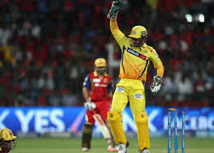
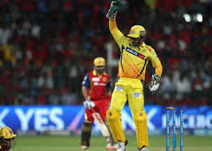

About MS Dhoni
M.S. Dhoni, born on July 7, 1981, in Ranchi, India, is a former Indian cricketer and captain of the Indian national team. He is regarded as one of the greatest finishers in limited-overs cricket and is known for his calm demeanor and tactical acumen.
Under his leadership, India won the 2007 ICC T20 World Cup, the 2011 ICC Cricket World Cup, and the 2013 ICC Champions Trophy, making him the only captain to win all three major ICC trophies.
Achievements
- ICC T20 World Cup Winner (2007)
- ICC Cricket World Cup Winner (2011)
- ICC Champions Trophy Winner (2013)
- Most successful captain in IPL history
- Padma Bhushan and Padma Shri awardee
Gallery
 
